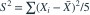
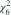
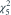
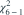

是来自  ，
，
，
。 的分布是哪项？- A

- B
- C
- D

我已思考，展开答案与解析
正确答案：D
- 用样本均值替代未知总体均值损失一个自由度，因此统计量服从

。
易错提醒使用总体均值或样本均值中心化会改变自由度。
数学三·概率统计基础专题 · 数学三概率统计基础专题·原创第32题
按数学三常见概率统计知识点原创；不是历年真题或教材原题。
，
。 的分布是哪项？


。数学三·概率统计基础专题 · 数学三概率统计基础专题·原创第32题
按数学三常见概率统计知识点原创；不是历年真题或教材原题。